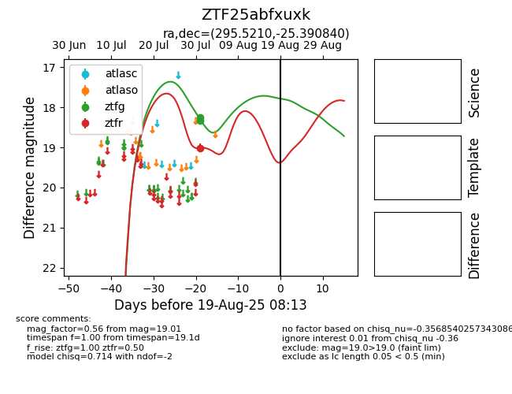

Target ZTF25abfxuxk at 2025-08-19 09:59, see:
FINK: fink-portal.org/ZTF25abfxuxk
Lasair: lasair-ztf.lsst.ac.uk/objects/ZTF25abfxuxk
ALeRCE: alerce.online/object/ZTF25abfxuxk
alt names
ZTF25abfxuxk (ztf,fink)
coordinates:
equatorial (ra, dec) = (295.5210,-25.39084)
galactic (l, b) = (14.6426,-21.82394)
photometry
last ztfg=18.25, ztfr=19.01
2 ztfg, 1 ztfr detections
